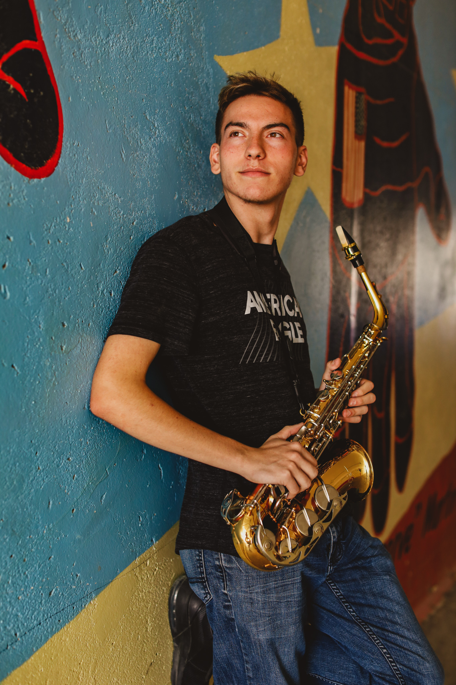
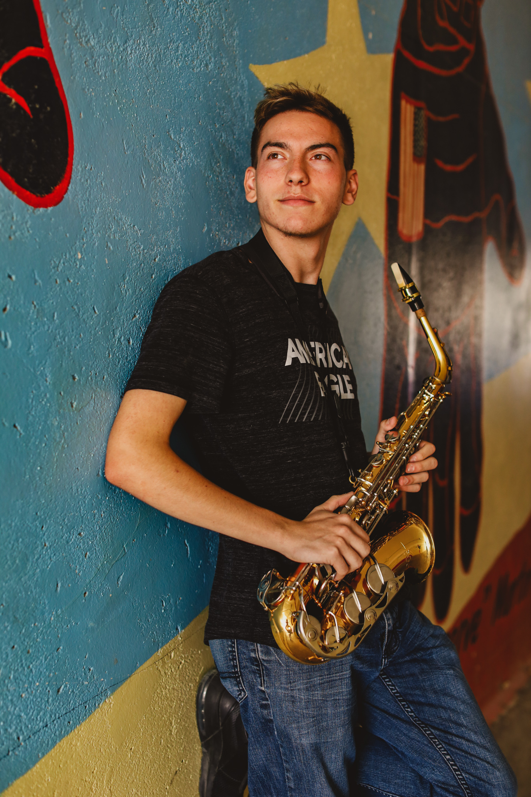

About Me
Hi my name is Bowen Condelario, I am eighteen years old and I am from casper wyoming.
I have many goals in life but I would say my biggest ambition is to one day make a game
that makes people happy, when I was a kid not many people liked me so i felt alone and sad
a lot during my middle school years but when my family got a Xbox 360 for Christmas
I became infatuated with games and it brought me the joy I was missing in my life
so I decided I want to give that sort of joy to someone else who might need it.
Plans for after Array
After attending Array I plan to work for a couple of years and eventually go to college debt free to get a degree in mathematics and computer science so that if I ever wanted to go into a different field of
computer science I would have the degrees and experience to do so. I plan to be the first in my family to come out of college debt free, I hope to go into the field of AI or cybersecurity to make the world better and stronger, I also hope that one day I and other individuals convince the United Nations to outlaw the use of AI weaponry.
My Hobbies
I love to travel, traveling is probably my most favorite hobby because I get to try all different kinds of cultures and their delicious foods, I love trying different kinds of food and adding them to my food pallet. going to different places helps me see different situations the world is in (its not good all the time though) but it gives me a new and better look on life, traveling also makes me feel free and not
chained down by anything and my favorite place I have been would have to be
Pittsburgh, Pennsylvania.
 

Music is a big passion of mine and I love to play the Alto Saxophone, I have been playing in the
Fighting Mustang Band every year of my high school experience at Natrona County High School , not only do I enjoy playing music but I love to listen to all kinds of genres except screamo type music because it hurts my ears. In my free time I sometimes like to create my own music and make music with my friends. Sadly, we have never played it for anyone other than ourselves.
I love to take photos with my sister inlaw, my sister inlaw has a photography business on the side and i love helping her out with her photos, the black and white photo and the saxophone picture to the right were taken by my sister in law for my graduation and I absolutely love them, i help her out with photo locations and social media for her business.